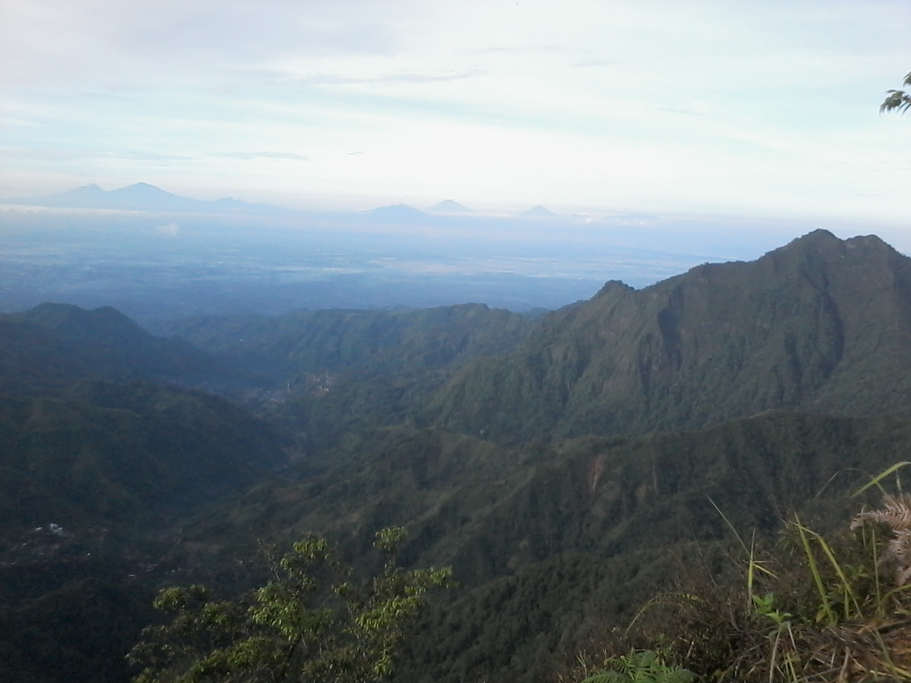

Puncak Songolikur

Puncak 29 muria atau dikenal puncak songolikur (bahasa jawa), merupakan tujuan populer pendakian di area sekitar gunung muria. Puncaknya juga dikenal dengan nama puncak 29 sapto renggo.
Entah apa maksud dari penamaan itu, yang pasti banyak sekali pendaki tertarik untuk mencapai puncaknya. Lebih-lebih ketika suasana liburan tiba.
Agendanya tentu saja untuk mengetahui lebih dalam puncak tertinggi kedua di gunung muria tersebut.
Secara administratif, puncak songolikur ini terletak di kawasan desa Rahtawu, Gebog kabupaten Kudus.
Gambaran Dari Puncak 29 Muria
Puncak 29 saptorenggo menjadi kawasan paling ramai kunjungan. Tentunya buat para pecinta alam, atau yang gemar traveling outdoor.
Pengalaman menapaki gunung terbayarkan ketika mencapai puncaknya. Suasana alamnya begitu segar, mencerahkan fikiran yang sedang kalut karena penat.
Sebenarnya, tidak hanya puncak 29 saja yang bisa didaki. Sobat alatmendaki bisa juga menggapai puncak lainnya, contohnya adalah puncak Natas Angin, puncak kelir, abiyoso dan lain sebagainya.
Dari sekian banyaknya gunung di kawasan muria, Puncak Natas Anginlah yang menempati posisi pertama. Yakni paling tinggi dengan ketinggian sekitar 1700 mdpl. Setelah itu baru disusul oleh puncak 29 gunung muria. Yakni dengan ketinggian sekitar 1603 mdpl.
Meskipun terbilang lebih rendah, tapi puncak 29 rahtawu kudus inilah yang paling populer. Telah banyak pendaki, baik pemula ataupun berpengalaman menjejakkan kakinya di sini.
Mengenai keindahannya, tentu tidak diragukan lagi. Alamnya yang masih asri, tentu membuat pendaki merasakan suasana yang tidak biasa.
Menariknya lagi, puncak ini cukuplah bersahabat buat para pendaki pemula. Hal ini lantaran treknya yang cukup mudah, kemudian banyak sekali pos yang ada di sekitarnya.
Malahan sebelum puncaknya, sudah banyak berdiri warung makan. Jadi, jika kehabisan perbekalan, sobat pendaki tak perlu khawatir.
Malah ada juga yang tetap merasa aman walau bawa perlengkapan seadanya. Contohnya hanya bawa tas hiking keci, atau malah cukup bawa pakaian ganti saja.
Ini tentu masuk akal, karena berjejer pos tersedia. Dan setiap posnya sudah banyak tempat yang menawarkan tempat mengisi perut, sampai tempat untuk istirahat.
Jalur Pendakian Menuju Puncak 29 Muria
Setidaknya, ada dua jalur yang bisa sobat temukan kalau mau ke puncak 29 gunung muria kudus ini.
Jalur pertama adalah dari desa Rahtawu Gebog. Kemudian jalur kedua melewati Desa Tempur, Keling Jepara.
Namun dari kedua jalur ini, jalur paling sering dilewati pendaki adalah Rahtawu.
Kedua jalur ini nantinya akan bertemu sampai ke desa terakhir, yakni Sendang Buton. Dan desa ini menjadi pos ke 4 yang sedikit lagi akan membawa pendaki sampai di atas puncak songolikur rahtawu tersebut.
Buat yang mau merencanakan pendakian, cara terbaik adalah menuju desa rahtawu. Sobat alatmendaki bisa menggunakan alat transportasi seperti ojek, ataupun bisa juga dengan membawa kendaraan pribadi.
Kalau mau naik ojek dari colo muria, ongkosnya cukup mahal. Kira-kira sampai 30 ribuan rupiah. Bahkan bisa lebih, tergantung seberapa baik sobat bisa negoisasi soal biayanya.
Tapi paling enaknya tentu saja bawa kendaraan pribadi. Cuma, persiapkan kendaraan yang masih sehat. Karena jalur pegunungan berkelok, dan tentu saja menanjak.
Di sini, sobat akan mudah menemukan desa rahtawu. Pasalnya, informasi mengenai arah menuju desa tersebut sangatlah jelas.
Setelah memasuki desa rahtawu, sobat akan dikenakan biaya masuk. Biayanya cukup murah, yakni sekitar 3 ribu rupiah. (bisa saja sudah berubah). Kemudian untuk biaya parkir kendaraan, sobat cukup bayar sekitar Rp.5000.
Setelah sampai rahtawu, sobat bisa memulai pendakian. Di sini, sobat akan disajikan trek mendatar sampai ke pos ketiga.
Baru setelah itu, sobat alatmendaki akan menapaki jalan menanjak sampai pos keempat. Pos keempat ini adalah di desa terakhir, yaitu Sendang Buton.
Kalau sudah kecapekan, isi perut sebentar dan istirahat. Paling tidak agar tenaga yang terkuras terisi kembali. Baru lanjutkan menapaki puncaknya.
Oh ya, sebelum sampai di pos keempat, sobat sebenarnya akan menemukan pertigaan. Pertigaan ini menunjukkan arah menuju puncak dan pos keempat.
Kalau sobat masih kuat dan perbekalan masih tersedia, langsung saja ambil rute lurus. Sobat akan langsung ke puncaknya dengan segera.
Tapi kalau sobat merasa butuh istirahat, ambil jalur ke kanan. Di sini, sobat bisa berhenti sebentar untuk mengisi perut sambil memulihkan tenaga di pos keempat Sendang Bunton.
sendang bunton puncak songolikur
Lokasi Camp Di Puncak 29 Muria
Asal tahu saja, di puncak songolikur saptorenggo ini tidak memiliki basecamp asli. Tapi sudah ada beberapa tempat istirahat yang dibangun rapi.
Buat yang mau mendirikan tenda di puncak ini, sobat tetap bisa melakukannya di area sekitar puncak. Yakni di pos kelima.
Pos ini juga sudah dilengkapi dengan beberapa warung. Jadi, sobat tetap bisa mengisi perut walau tidak bawa perbekalan yang cukup.
kalau sudah sampai di puncak, jangan lupa untuk menjaga kelestarian alamnya. Jangan buang sampah sembarangan.
Pastikan untuk membawa kantong kresek untuk tempat sampah. Bawa sampah turun, dan buang di tempat sampah yang disediakan.
Nah, jika sobat berada di area semarang, demak, jepara ataupun pati, Puncak 29 muria ini bisa didaki terlebih dahulu. Dari Puncak songolikur muria ini, sobat bisa melihat kawasan sekitar muria dengan lebih jelas. Bahkan pemandangannya tak kalah dengan gunung lainnya di jawa tengah.